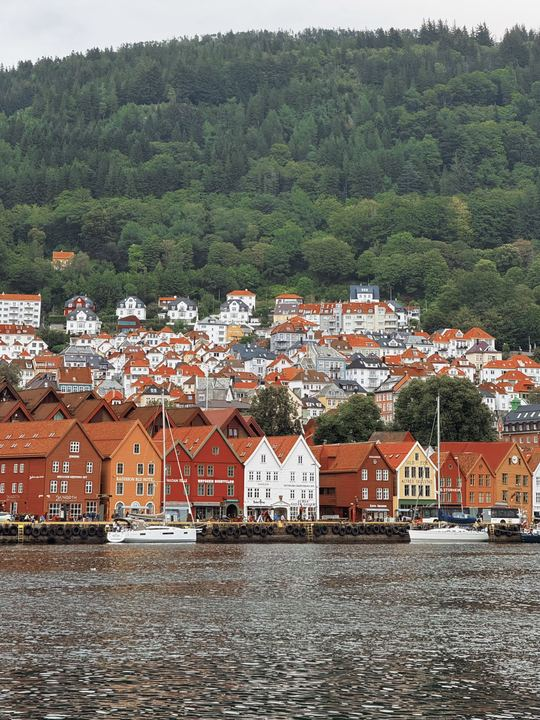
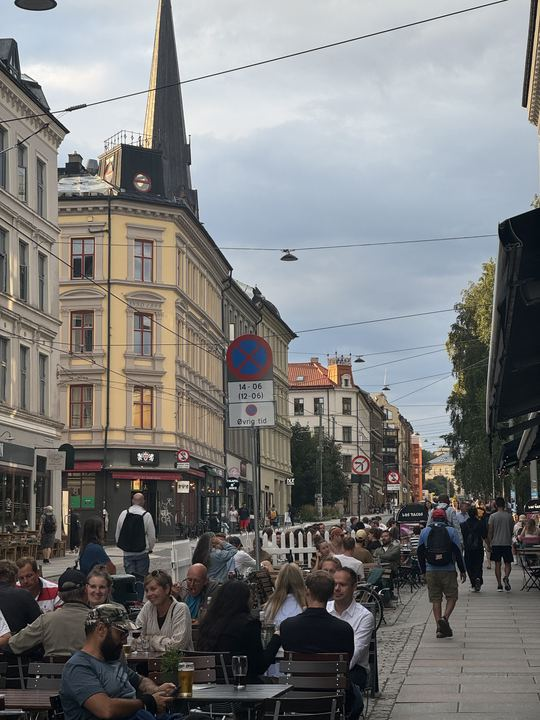
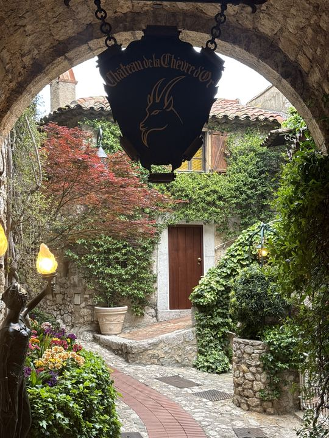
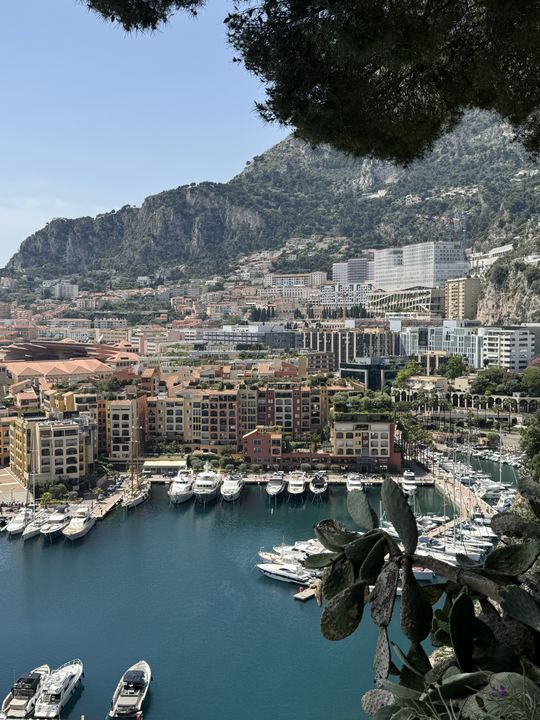
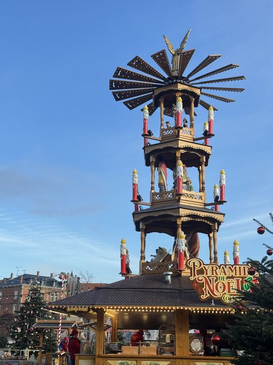
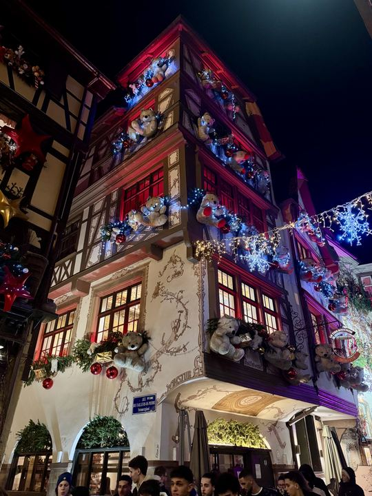
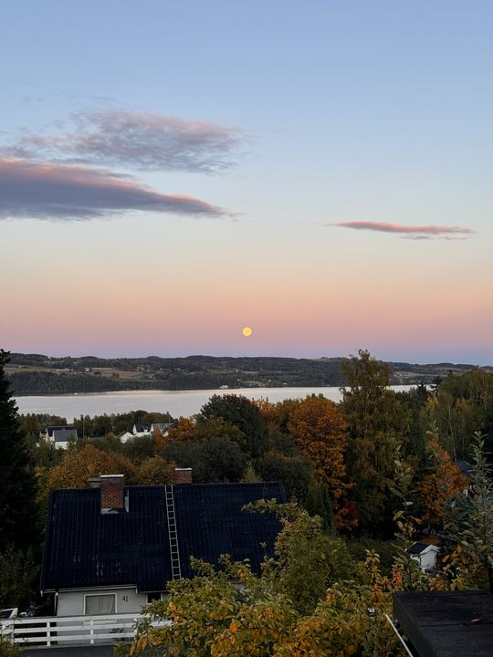

I take photos wherever I go. These are favourites from 23 places across 12 countries,
most of them from studying in Norway, France, and Finland and the trips in between.
Eiffel Tower at night, ParisNorthern lights, Gjøvik, NorwayHà Giang, Vietnam

Bergen, Norway

Oslo, NorwayHungarian Parliament, BudapestJoffre Lakes, British Columbia, Canada

Èze village, FranceBasel Minster at sunset, Switzerland

Monaco

Christmas market, Colmar, France

Strasbourg at Christmas, France

Lake Mjøsa at dusk, Gjøvik, NorwayArc de Triomf, Barcelona